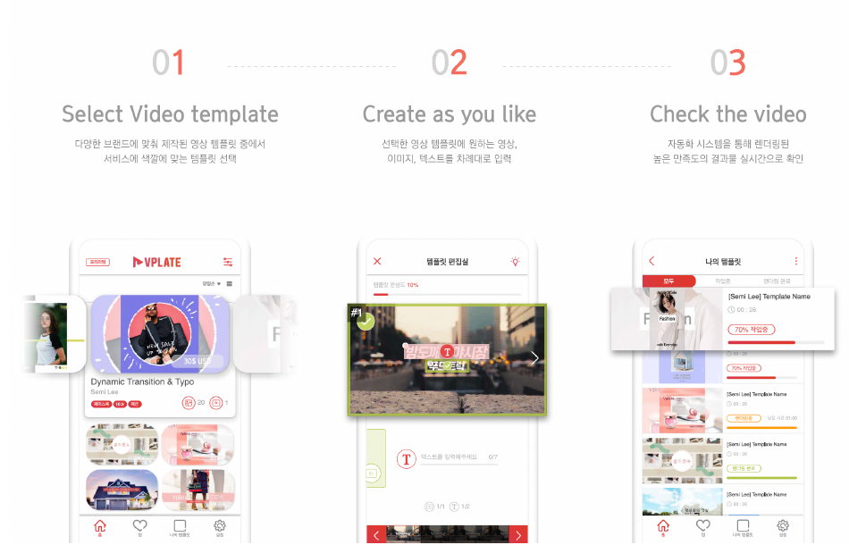
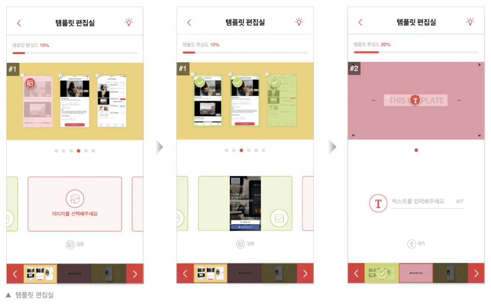
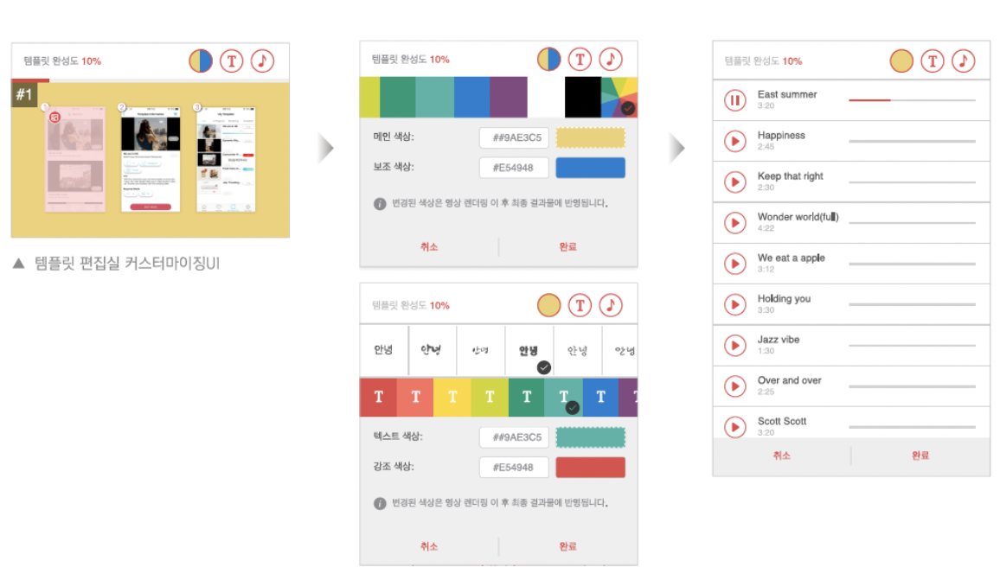

영상 제작 경험이 없어도 템플릿에 이미지·텍스트만 넣으면 광고 영상이 완성되는 앱, VPLATE의 기획과 iOS/Android 디자인을 리드했습니다.
광고 영상 제작은 전문 인력과 편집 도구, 시간이 필요한 작업이라 소상공인·마케터가 직접 만들기 어려웠습니다. 영상 제작 경험이 없는 사람도 광고 영상을 만들 수 있게 하려면, 편집이 아니라 "선택과 입력"만으로 완성되는 구조가 필요했습니다.
만약:
그러면:
편집 경험이 전혀 없는 사용자도 5분 만에 광고 영상을 완성할 수 있을 것이다
User research · Creative ideation · Design strategy
Task flows · Wireframing · Prototyping · Usability testing
Interaction design · Visual/UI design · Data visualization · Illustration/Iconography
양적인 측면 · 구독 시 무제한으로 영상 제작
질적인 측면 · 내부 디자이너팀의 검토를 통해 높은 퀄리티 유지
광고영상 마켓플레이스 · 영상 프리랜서와 마케터를 연결시켜주는 공간을 통해 서로의 니즈를 충족시켜주는 프로세스 구축
데이터 분석을 통한 효과 검증 · 높은 광고효과를 위해 인기별 광고영상 분석 및 제작

Planning → Design → Execution → Report 4단계로 UT를 설계하고 진행했습니다.
| 연령 | 참여자 유형 |
|---|---|
| 20~25 | ABC |
| 25~29 | AB |
| 30~35 | B |
| 35~39 | C |
Task 별로 문제점을 파악한 뒤, 가장 문제가 되는 부분을 집중적으로 분석했습니다.
▲ A, B, C 유형 통합 그래프. 붉은 점선 영역이 예상 대비 수행시간·에러가 크게 튄 문제 구간입니다.
Task 4-1, 2, 3, 7-2 · 템플릿 편집실에서 영상 제작하기

| 개선 항목 | 내용 |
|---|---|
| 다중 씬 이미지 | 같은 영상 내 이미지가 교체되는 경우 사용자 혼란을 방지하기 위해, 한 씬 내에서 슬라이드로 다음 이미지를 넣을 수 있도록 환경 개선 |
| 소스 입력 영역 | 영상·이미지·텍스트 입력 시 아이콘 색상을 옅은색 → 뚜렷한 색으로 변경해 인지성 향상 |
| 페이지 이동 | 한 씬 내 다음 소스로만 이동 가능했던 것을, 모든 씬을 슬라이드로 이동할 수 있도록 업데이트 |
| 네비게이션 바 | 모든 소스가 입력됐을 때와 아닐 때를 시각적으로 차별화 |

영상 전체 테마 색상을 변경할 수 있는 UI 추가. 입력된 색을 그대로 보여줘 쉽게 인지하도록 함.
제시된 폰트 중 원하는 폰트를 선택해 영상에 적용. 각 폰트는 기본 색상과 강조 색상으로 구분.
앱 내 제공 음원을 선택해 원하는 타이밍에 맞춰 적용. 재생 타이밍을 페이지 내에서 미리 볼 수 있음.